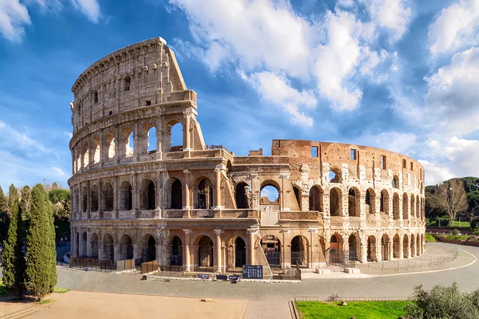

My Interests & Hobbies
In my free time, I enjoy the following:
- Watching movies
- Gaming (especially space and strategy games)
- Learning new things and exploring technologies
A Favorite View
Here is a place that inspires me or reflects my interests:
